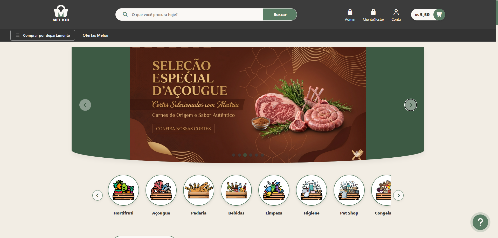
1. Navegação por Teclado
Caso não utilize o mouse, você pode navegar por todo o nosso mercado usando a tecla Tab do seu teclado.
Tab avança para o próximo elemento, Shift + Tab recua e a tecla Enter aciona o botão ou link focado.
Preparamos este guia ilustrado passo a passo para tornar sua navegação no Melior muito mais simples e inclusiva.

Caso não utilize o mouse, você pode navegar por todo o nosso mercado usando a tecla Tab do seu teclado.
Tab avança para o próximo elemento, Shift + Tab recua e a tecla Enter aciona o botão ou link focado.
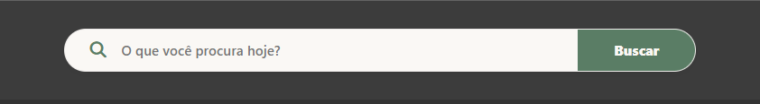
No topo da página, utilize a nossa barra de pesquisas em formato de pílula branca. Basta clicar no campo com o texto "O que você procura hoje?", digitar o item desejado e pressionar o botão Buscar.
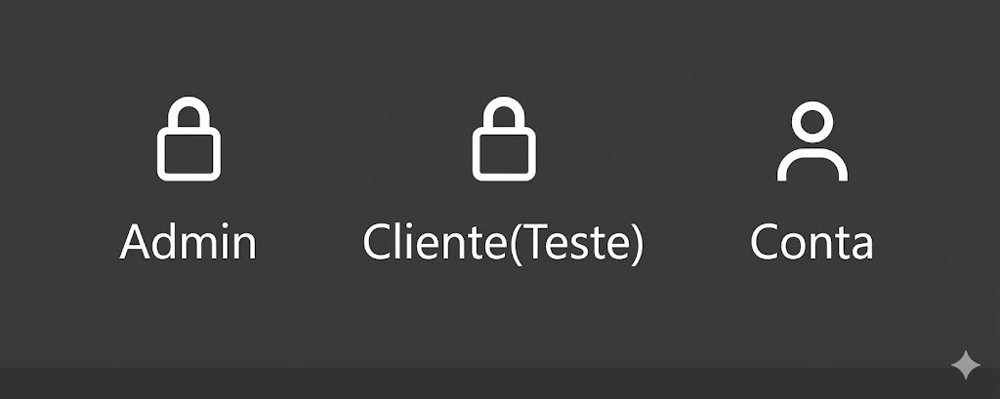
Para facilitar os testes e a navegação no sistema, disponibilizamos atalhos rápidos de perfil no menu superior. Clicando neles, você pode alternar instantaneamente entre a visão de Admin (gerenciamento do mercado), Cliente (Teste) (com uma conta pré-configurada para simulações) e acessar as configurações gerais da sua Conta ativa.
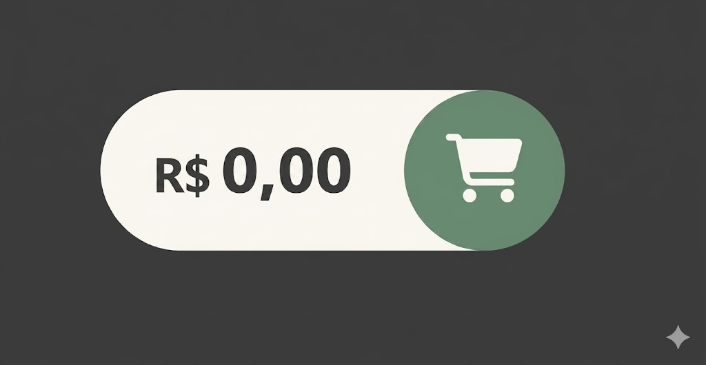
Ao navegar pelas vitrines, você pode clicar diretamente na imagem do produto ou no link/botão para incluí-lo imediatamente na sua lista de compras atual. No canto superior direito, o botão em formato de pílula exibe o valor acumulado em tempo real. Clicando nele, o sistema redirecionará você para a revisão final das mercadorias.
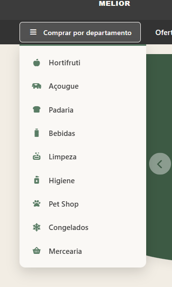
Clicando no botão "Comprar por departamento" no menu inferior do cabeçalho, uma lista suspensa se abrirá para facilitar seu acesso direto a seções como Açougue, Hortifruti, Padaria e Higiene.
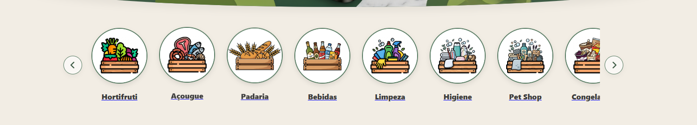
Nessa parte você tem acesso as "Categorias". Facilitando a navegação atráves de imagens.
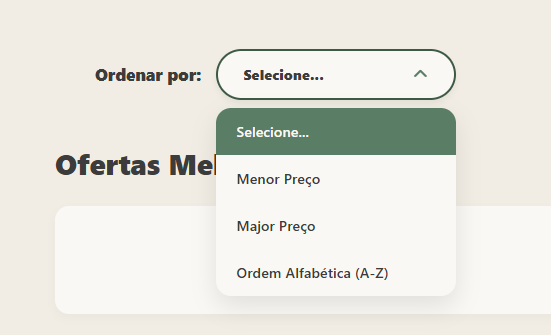
Para encontrar as melhores oportunidades de forma rápida, utilize o seletor "Ordenar por:" localizado logo acima do catálogo de produtos. Ao clicar na caixa de seleção, você pode filtrar a exibição das nossas Ofertas Melior pelos critérios de: Menor Preço, Maior Preço ou por Ordem Alfabética (A-Z).
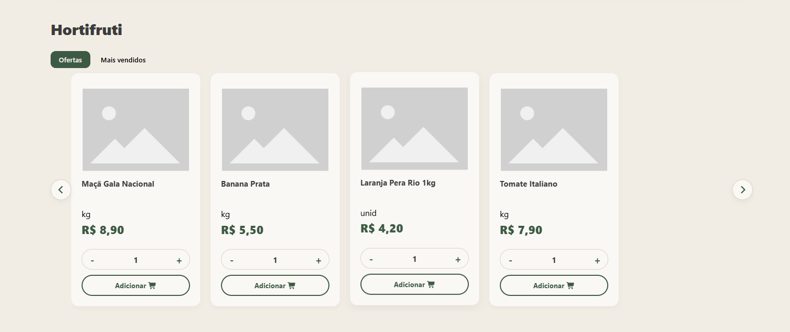
No site disponibilizamos diversos produtos, assim como na imagem, existem outras categorias desses produtos, como: Hortifruti, Açougue, Padaria, Limpeza e outros...
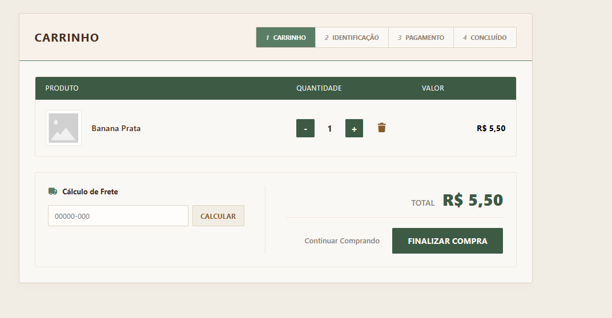
Na tela do seu Carrinho, você pode revisar detalhadamente todos os itens selecionados antes de fechar o pedido. É possível aumentar ou diminuir a quantidade de cada produto utilizando as teclas - e +, ou removê-los clicando no ícone da lixeira. Aproveite também para inserir o seu CEP no campo "Cálculo de Frete" para conferir o valor total estimado antes de prosseguir com a compra.
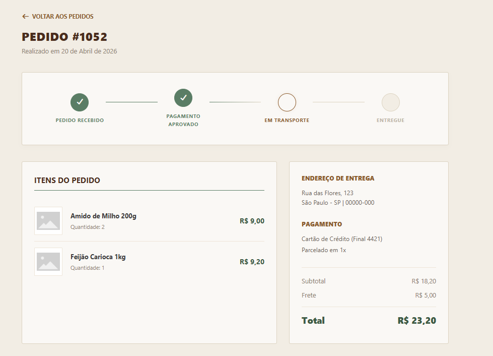
Assim que o pagamento for validado, você será direcionado para a tela de detalhes do pedido. Através da nossa linha do tempo interativa no topo da tela, você consegue acompanhar em tempo real o status atual da sua compra (desde Pedido Recebido e Pagamento Aprovado até Em Transporte e Entregue). Nessa mesma área ficam salvos o endereço de entrega, a forma de pagamento selecionada e o resumo dos valores.
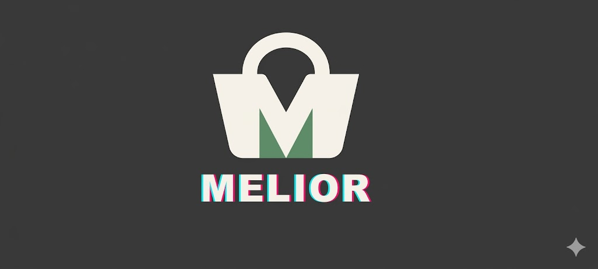
Ao clicar neste botão, você voltará à página inicial. Ele está configurado diretamente na nossa identidade visual no topo esquerdo do cabeçalho para facilitar o seu retorno rápido.
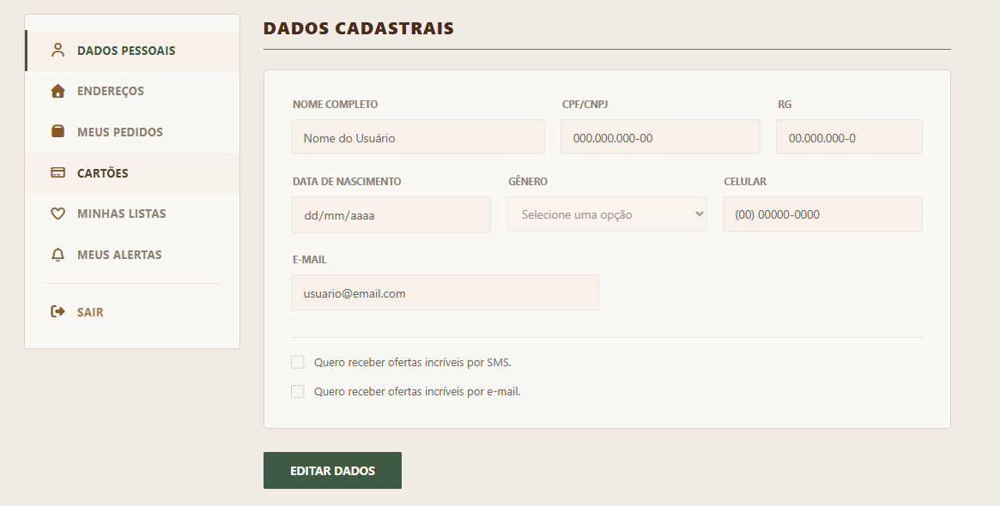
Nessa tela é possível ter acesso aos seus dados pessoais, como Nome, CPF, Endereço e muitos outros.
Nossa equipe está pronta para ajudar você a finalizar seu pedido.